מתקינות, טוענות טבלה, בונות שני גרפים, ורואות איך קליק אחד מסנן את כל הדוח.
בדרך נשאל את השאלה שאנליסטית שואלת תמיד: האם הגרף הזה באמת עונה על מה ששאלנו?
היום נוגעות בשלבים 1, 5 ו־6 מתוך 9 השלבים לבניית דוח.
ולמה בכלל פאוור BI ולא אקסל? ארבעה דברים, ומה זה נותן לכן.
פאוור BI Desktop הוא חינמי ועובד על Windows. לא צריך חשבון.
בקלאסרום יש קישור להורדה מהאתר של מיקרוסופט, וסרטון קצר שמראה את כל ההתקנה. צופות בסרטון קודם.
מורידות מהקישור את קובץ ההתקנה, פותחות אותו, ועוברות על ההתקנה כמו בסרטון. זה לוקח כמה דקות.
פותחות את התוכנה. אם קופץ חלון Sign in — סוגרות אותו ב־X. לא צריך להתחבר.
מורידות מהקלאסרום את שני הקבצים נתוני משלוחים.xlsx ו־נתוני שיווק ומכירות.xlsx,
ושומרות אותם בתיקייה חדשה במחשב: Power BI\שיעור 1.
למה תיקייה אחת? פאוור BI לא מעתיק את הקובץ לתוכו — הוא זוכר איפה הקובץ יושב, וחוזר אליו.
אם מזיזות את האקסל אחר כך, הדוח לא ימצא אותו.
חלק א · עושות יחד · נתוני משלוחיםהטבלה הראשונה והגרף הראשון
חנות אונליין שולחת 500 משלוחים דרך כמה חברות שילוח. השאלה שלה: עם איזו חברה כדאי להמשיך לעבוד?
הגדרה חד־פעמית
File › Options and settings › Options
בצד שמאל, תחת CURRENT FILE, בוחרות Regional Settings.
בשדה Locale for import בוחרות Hebrew (Israel) (אם כבר כתוב שם — מצוין). OK.
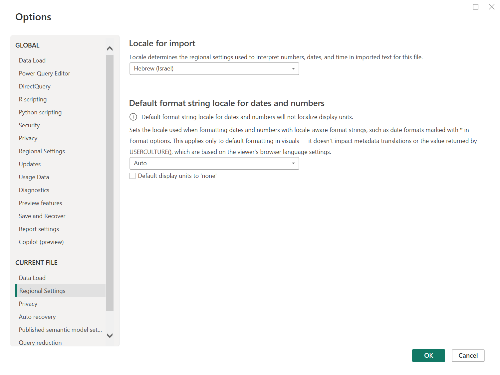
חשוב: CURRENT FILE (למטה ברשימה), לא GLOBAL.
למה? כדי שתאריכים יוצגו כמו בארץ (יום/חודש) והכסף יוצג בשקלים. בלי זה, 3/4 יכול להיות מרץ או אפריל.
טוענות את הטבלה
Home › Get data › Excel workbook, ובוחרות את נתוני משלוחים.xlsx.
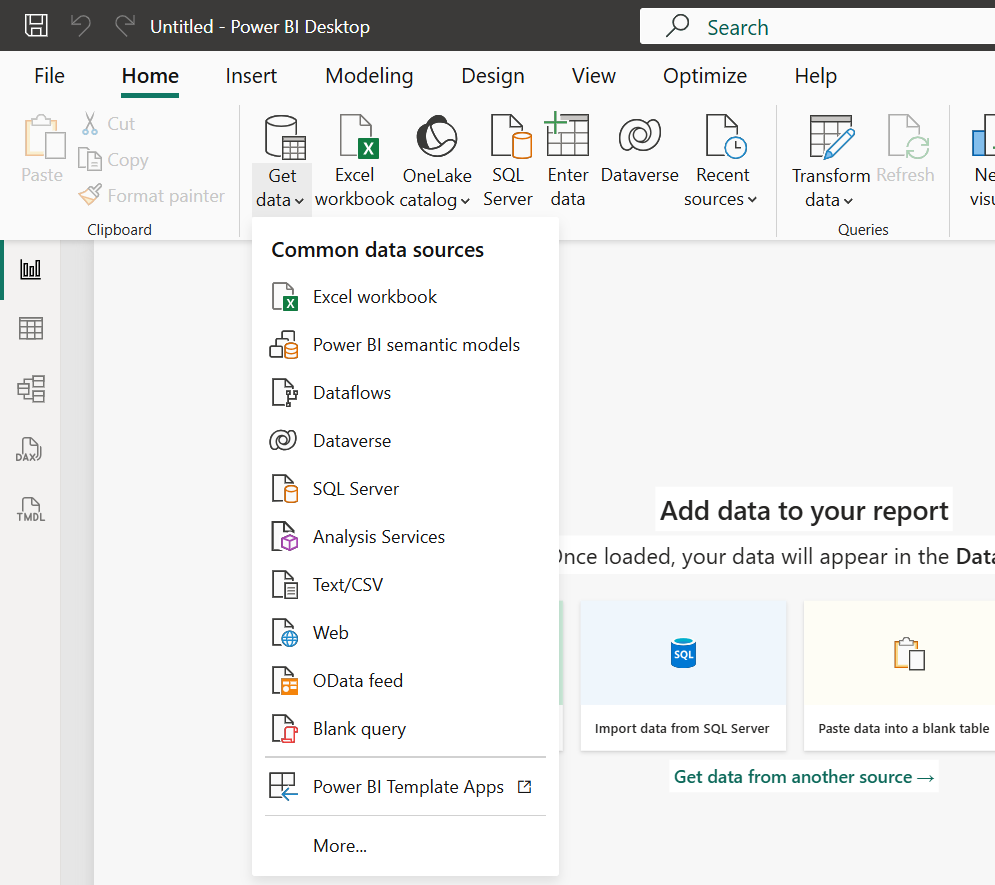
קפץ חלון ״Introducing the new Get Data experience״? לוחצות No thanks.
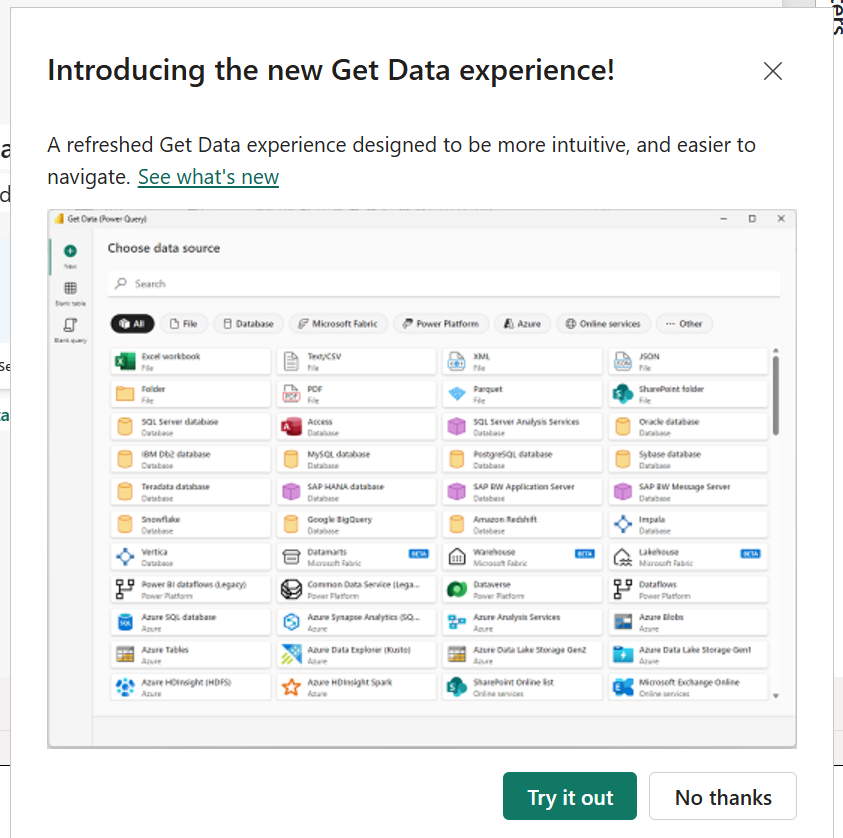
נפתח חלון Navigator. יש בו שני דברים עם שמות דומים — מסמנות את ShipmentData
(האייקון של טבלה), לא את הגיליון.
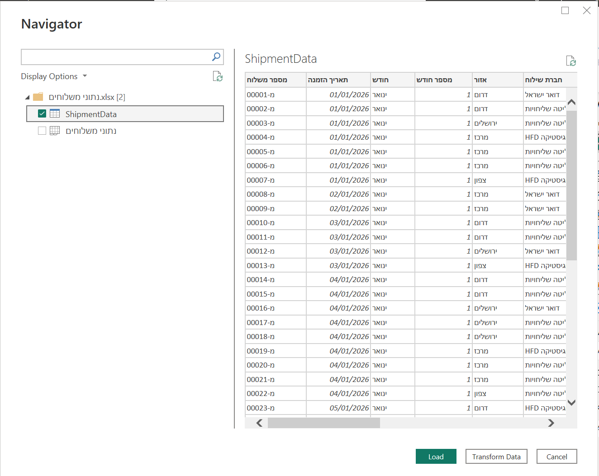
מסומן ShipmentData, עם אייקון הטבלה. הגיליון נתוני משלוחים שמתחתיו נשאר ריק.
לוחצות Load.
בפס הצר משמאל, שלושת האייקונים הראשונים הם Report (הדוח), Table (הטבלה), Model (הקשרים).
(מתחתם יש עוד שניים, DAX ו־TMDL — לא צריך אותם.)
עוברות ל־Table ומסתכלות למטה: כמה שורות יש?
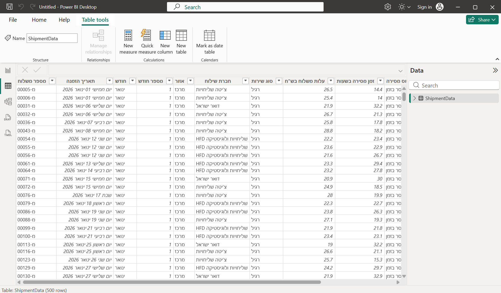
מספר השורות כתוב בפינה השמאלית התחתונה.
למה טבלה ולא גיליון? טבלה יודעת בדיוק איפה הנתונים מתחילים ונגמרים.
גיליון מביא הכול — כולל כותרות, הערות ותאים ריקים שמישהי שכחה שם.
גרף: מי מאחרת?
חוזרות ל־Report. לוחצות על שטח ריק בדף הלבן.
בחלונית Visualizations בוחרות Clustered column chart (עמודות זו ליד זו).
גוררות מחלונית Data:
חברת שילוח ← אל X-axis
כשל מסירה ← אל Y-axis
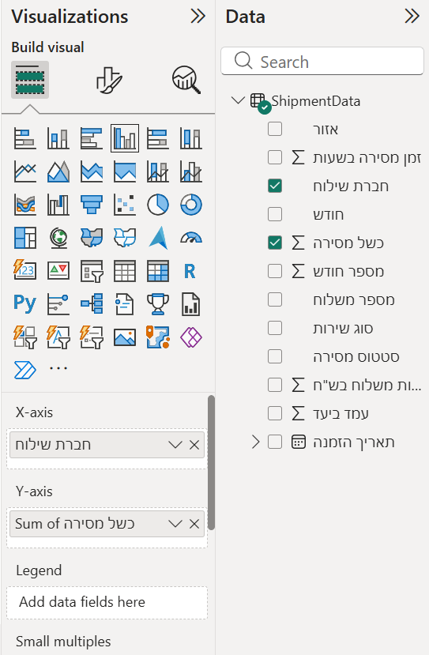
כך זה נראה אחרי הגרירה. פאוור BI כותב לבד Sum of — כלומר סכום.
מסתכלות על הגרף. איזו חברה הכי גרועה?
רגע, שאלה של אנליסטית: הגרף סופר כמה כשלים היו לכל חברה.
אבל חברה ששלחה יותר משלוחים תצבור יותר כשלים, גם אם היא עובדת טוב. זה לא הוגן להשוות ככה.
השאלה הנכונה היא לא כמה כשלים, אלא איזה חלק מהמשלוחים נכשל.
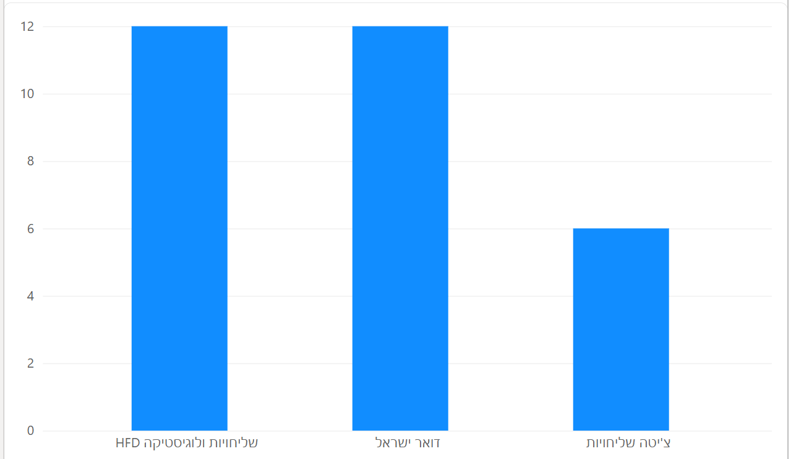
בספירה: שתי חברות עם 12 כשלים בדיוק. תיקו.
ב־Y-axis, לוחצות על החץ הקטן ליד כשל מסירה ובוחרות Average.
עכשיו כל עמודה היא אחוז הכשלים של החברה. האם התשובה השתנתה? (רמז: בספירה היה תיקו.)
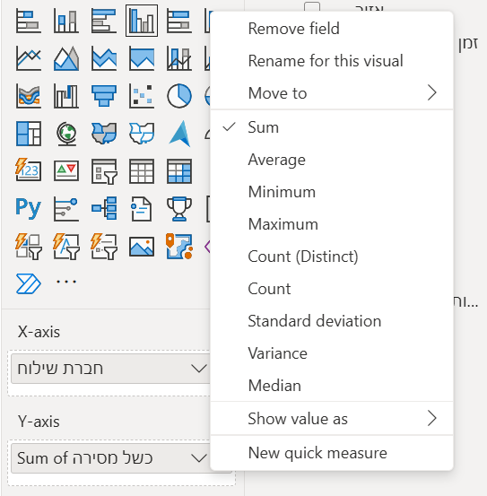
בדקי את עצמך: כך הגרף אמור להיראות
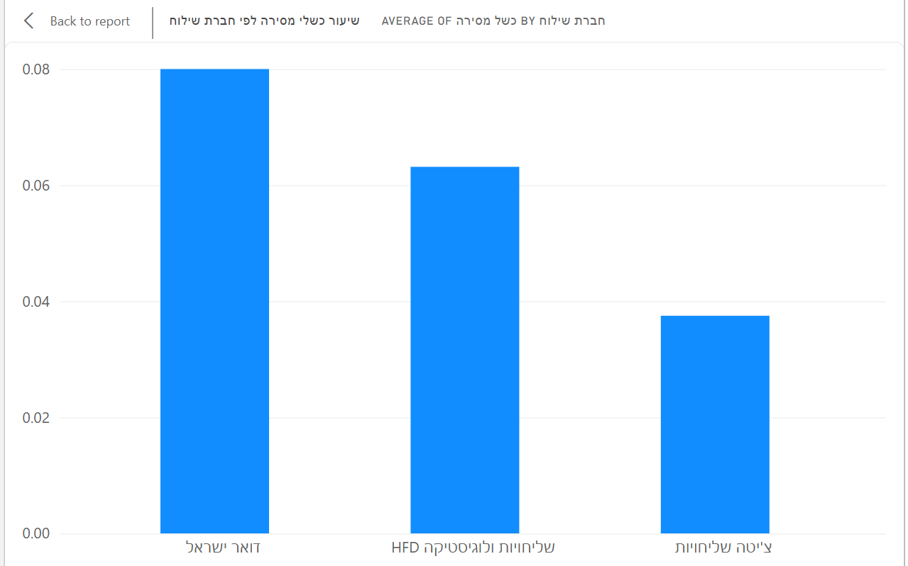
0.08 פירושו 8% מהמשלוחים נכשלו. התיקו נשבר.
נותנות לגרף כותרת: בוחרות את הגרף, Format visual › General › Title,
וכותבות "שיעור כשלי מסירה לפי חברת שילוח".
למה זה עובד? בעמודה כשל מסירה יש רק 0 או 1. ממוצע של אפסים ואחדים = החלק שהוא 1.
אותו טריק עובד בכל מסד שיש בו עמודה של כן/לא.
טבלת סיכום (Matrix), וקליק שמסנן
לוחצות על שטח ריק בדף, ובוחרות Matrix.
חברת שילוח ← Rows · סוג שירות ← Columns ·
כשל מסירה ← Values (ושוב — Average).
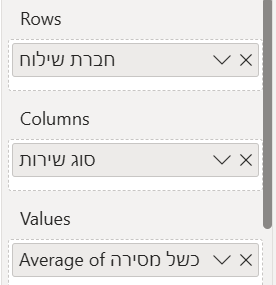
עכשיו הקסם: לוחצות על עמודה אחת בגרף. מה קרה לטבלה? לוחצות שוב על אותה עמודה כדי לבטל.
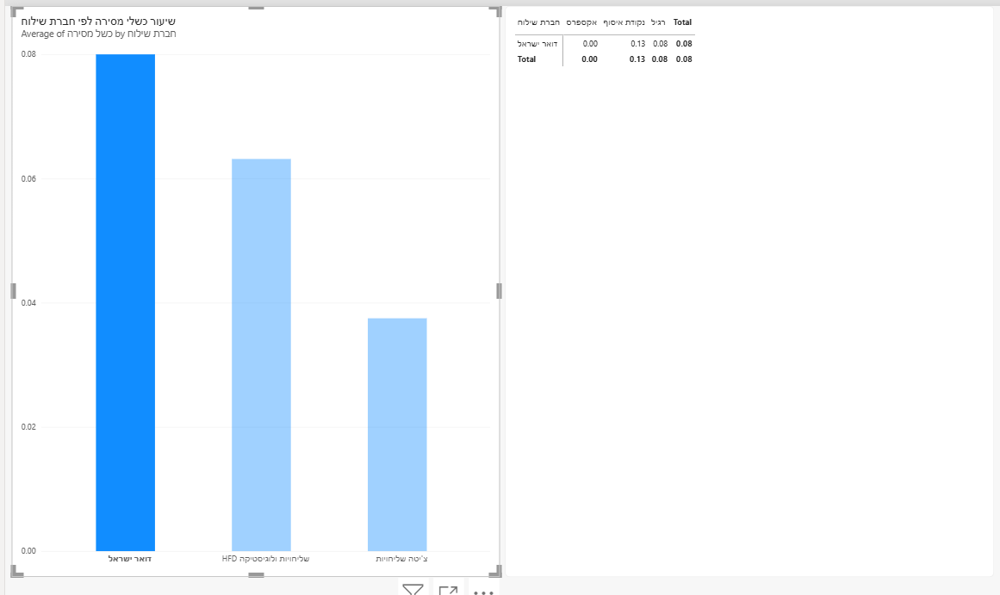
לחצנו על דואר ישראל: שאר העמודות מחווירות, והטבלה מציגה רק אותה.
שומרות: File › Save as. במסך שנפתח לוחצות Browse this device (למטה, תחת Other) — לא OneDrive.
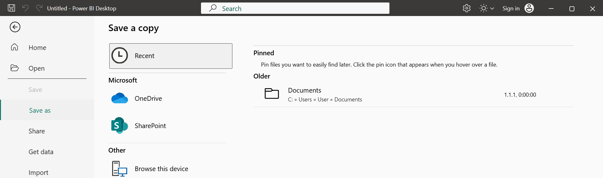
Browse this device נמצא בתחתית הרשימה.
בחלון השמירה בוחרות את התיקייה Power BI\שיעור 1, וכותבות בשם הקובץ משלוחים. Save.
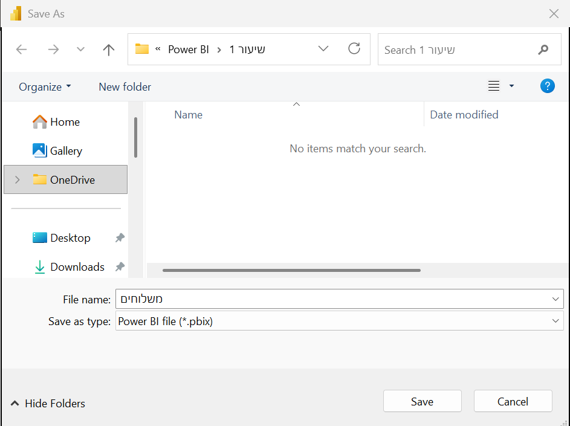
למעלה רואים באיזו תיקייה אתן: Power BI › שיעור 1.
ועכשיו החלטה: החברה עם הכי מעט כשלים היא גם היקרה ביותר
(גוררות את עלות משלוח בש״ח לגרף, עם Average, ורואות). מה הייתן ממליצות לחנות? אין תשובה אחת נכונה —
יש תשובה שמנומקת בנתונים. זו העבודה של אנליסטית.
זה ההבדל מאקסל. באקסל כל גרף עומד לבד. בפאוור BI כל הדוח מחובר —
מי שמסתכלת על הדוח יכולה לשאול שאלות בעצמה, בקליק, בלי לבקש מכן גרף חדש.
חלק ב · פותרות יחד · נתוני שיווק ומכירותהתרגיל: איפה הכסף שלנו עובד?
חברה מוכרת בחמישה ערוצים (אתר, אפליקציה, סניפים...) ומשקיעה בשיווק בכל אחד. 300 שורות.
קובץ חדש: File › New. טוענות את נתוני שיווק ומכירות.xlsx, מסמנות את הטבלה MarketingSalesData, Load.
Clustered column chart: ערוץ מכירה ← X · הכנסות ₪ ו־עלות שיווק ₪ ← Y.
כותרת: "הכנסות מול עלות שיווק לפי ערוץ מכירה".
איזה ערוץ הכי משתלם — כלומר מכניס הכי הרבה על כל שקל של שיווק?
על שאלה 3 קשה לענות מהגרף. רואים שני מספרים, אבל לא את היחס ביניהם.
מה שחסר הוא עמודה שעוד לא קיימת: הכנסות חלקי עלות שיווק.
לבנות עמודות כאלה נלמד בשיעור 5 — וזה חלק מהטיוב: להכין את הנתונים לשאלה.
חלק ג · י״ב בלבד · שיעורי בית, עד 20 דקותהצצה ראשונה במסד שלכן י״ב
מתחילות בסוף המיט, מסיימות בבית.
קובץ חדש, ואז Get data: אם המסד הוא xlsx — Excel workbook. אם CSV — Text/CSV.
Load, ועוברות ל־Table: כמה שורות? כמה עמודות?
בונות גרף אחד, על עמודה שמסקרנת אתכן.
מסתכלות עליו בעיניים של אנליסטית: מה נראה מוזר? ערך שלא הגיוני, עמודה שנראית ריקה,
קטגוריה שמופיעה פעמיים בכתיב אחר, מספר שנסכם כשהיה צריך ממוצע...
שומרות בשם המסד שלנו - שיעור 1.
אם הגרף יוצא מוזר — מצוין. זו בדיוק הנקודה. ברוב המסדים בעולם יש בעיות,
ובשבוע הבא נלמד לראות את כולן בבת אחת.
מה מגישות בקלאסרום
צילום מסך של הגרף.
שורה אחת: כמה שורות וכמה עמודות יש במסד.
משפט אחד: מה נראה מוזר.
הקובץ לא נפתח בפאוור BI? לא מתעקשות. כותבות לי בקלאסרום מה קרה (ומה הסיומת של הקובץ), ונסדר את זה יחד.
נתקעתי
כל אלה קרו למורות בקורס המקורי. אתן בחברה טובה.
ההתקנה נראית תקועה
מחכות חמש דקות. לפעמים יש חלון שמבקש אישור, והוא מסתתר מאחורי חלונות אחרים — בודקות בשורת המשימות למטה.
ההתקנה מבקשת סיסמה של מנהל
במחשב משפחתי לפעמים רק להורים יש הרשאה להתקין תוכנות. מבקשות מהם לאשר, או להתקין יחד איתכן לפני השיעור.
קפץ חלון שמבקש להתחבר (Sign in)
סוגרות ב־X. לא צריך חשבון כדי לעבוד.
לחצתי Load ואני רואה דף לבן
זה תקין. הנתונים נטענו — הם בחלונית Data מימין, וב־Table בפס השמאלי. דף הדוח לבן כי עוד לא בנינו בו כלום.
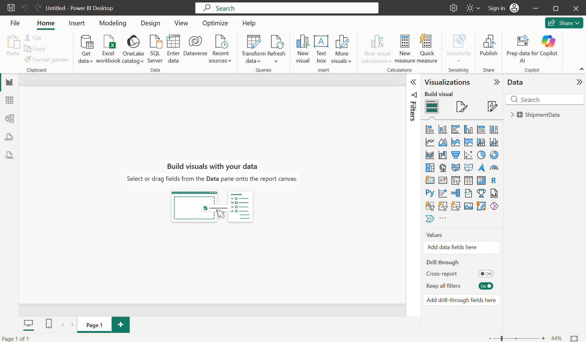
ככה זה אמור להיראות: הדף ריק, ו־ShipmentData מחכה בחלונית Data.אין לי כפתור Excel
משתמשות תמיד ב־Get data ובוחרות שם Excel workbook. זה אותו דבר.
בחרתי סוג גרף והגרף הקודם שלי השתנה
כשגרף מסומן, לחיצה על סוג גרף אחר מחליפה אותו. Ctrl+Z מחזיר. בפעם הבאה — קודם קליק על שטח ריק, ורק אז בוחרות סוג.
כל העמודות בגרף באותו גובה, 100%
נבחר בטעות 100% stacked column. מסמנות את הגרף ולוחצות על Clustered column chart.
חלק מהנתונים נעלמו מהטבלה
כנראה לחצת על עמודה בגרף, והיא מסננת. לוחצות שוב על אותה עמודה, או על שטח ריק בגרף.
קיבלתי סכום ואני רוצה ממוצע
בחלונית Visualizations, בשדה עצמו (למשל תחת Y-axis) — חץ קטן ליד השם ← Average.
קופצות הודעות על "new experience" או "semantic model"
מתעלמות וסוגרות. זה לא קשור למה שאנחנו עושות.
קשה לראות את המיט ואת פאוור BI ביחד
מקטינות את חלון המיט לצד אחד של המסך. אם יש מסך שני או לפטופ נוסף — המיט עליו. מהטלפון זה לא עובד.